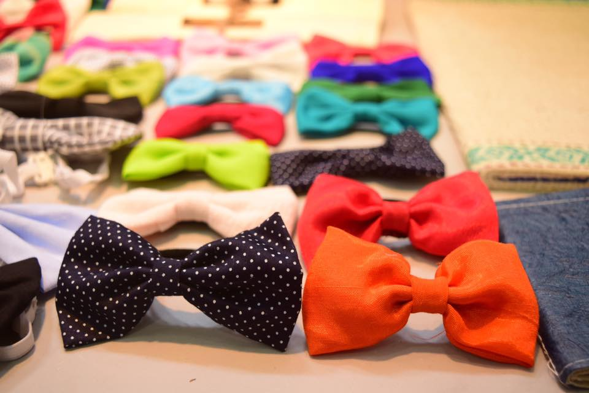
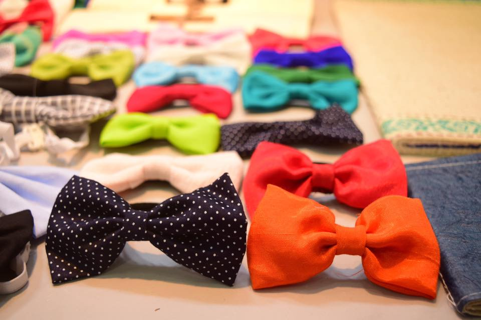

Enactus MPSTME is a not-for-profit organisation that aims to empower marginalised community through social entrepreneurship. I worked in the research and development department (2015-16) and creatives department (2016-17).
I worked on Project Parivartan which focused on developing environment friendly products that could be made and sold by slum dwellers. I developed two products that were taught to the beneficiaries who then learned to market and sell the products on their own.
Product Development:
Bowey
Bows were trending back in 2013 and being a DIY nerd, I learned to stitch bows for myself. On realising how easy it was, three friends and I set up a small business in our summer vacation after 10th grade. We sourced scrap cloth from tailors and boutiques, made hair accessories, and marketed and sold them on our Facebook page.
When I joined Enactus, I realised that a similar business could easily be set up for women living in slums. We reached out to the college staff and women from the Juhu and Vile Parle slums. Most of the women already knew to use a needle and thread and picked up the product with ease. We tied up with boutiques to provide cloth to them on a regular basis. The products were sold at fairs that we participated in and retail stores we tied up with in Vile Parle.
 

Mosquito Repellent Agarbattis
In order to combat a rise in malaria in our Juhu community, we decided to develop Mosquito Repellent Agarbattis that could be made by the dwellers and sold within the community itself. This product underwent multiple iterations. I started with the idea of hand rolling the agarbattis from a mix of ayurvedic ingredients. By doing this, we were also trying to introduce crabon-free agarbattis which would be better for the environment and healthier for the users. However, the process of making the mixture, handrolling the agarbattis and packaging them turned out to be too cumbersome and time consuming for the beneficiaries. The cost price was also high owing to the multitude of ayurvedic powders and oils that were required.
In the second iteration, I tried to reduce the time and resources it would take to create the product. On researching, I came across the practice of dipping plain agarbattis in oils to impart their scents. I took this concept forward and dipped the agarbattis in citronella oil, which is a mosquito repellent. This method significantly reduced the time and effort as well as increased the profit margin while being equally effective.
Digital Creatives:
As a member of the Creatives team, I was tasked with deisgning packaging, publicity posters and any other requirements for the committee.